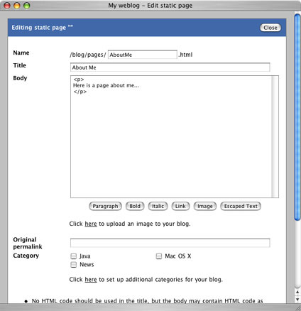

|
Although most of the content on a blog consists of blog entries, there may be times where you'd like to include some static content as a part of your website. For example, you might want to have an "About me" page, or a page containing links to other sites that you find useful. Although you could have a separate web application serving up this content, Pebble provides a simple way to manage small amounts of content with the following benefits.
- Pages can be categorized.
- Pages are included in the search feature.
- Pages are included in your referrers/visited pages statistics.
- Pages and blog entries have a consistent look and feel.
Effectively, a static page is just a blog entry that doesn't have comments/TrackBacks and has a memorable permalink such as http://.../blog/pages/AboutMe.html.
Adding a Static Page
To add a static page, click the Static pages link after logging in. This will open a window showing a list of all static pages that currently exist, with links to edit and delete them. In addition to this is a link allowing you to add a new static page and clicking this will open a window similar to the blog entry window.
The only real difference between this and the blog entry window is the Name field at the top. This makes up the memorable permalink to the page and the name you give a page must only contain alphanumeric characters, numbers, '-', '_' or /'. Examples include AboutMe, articles/SomeArticleName, and so on.
|